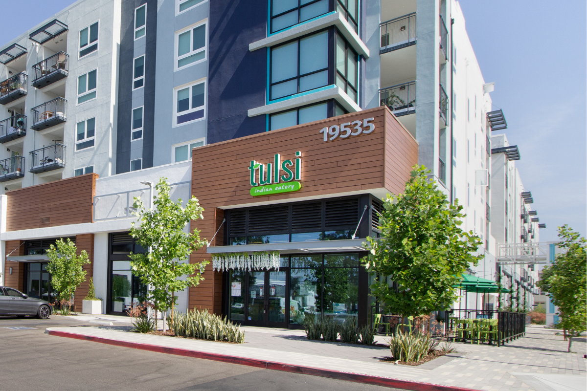
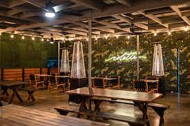
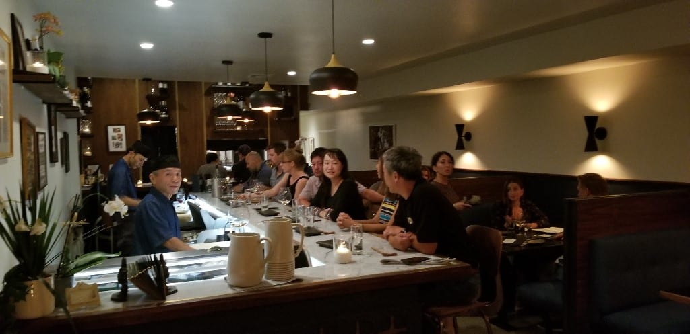
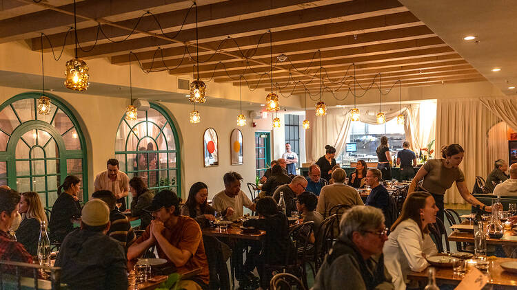
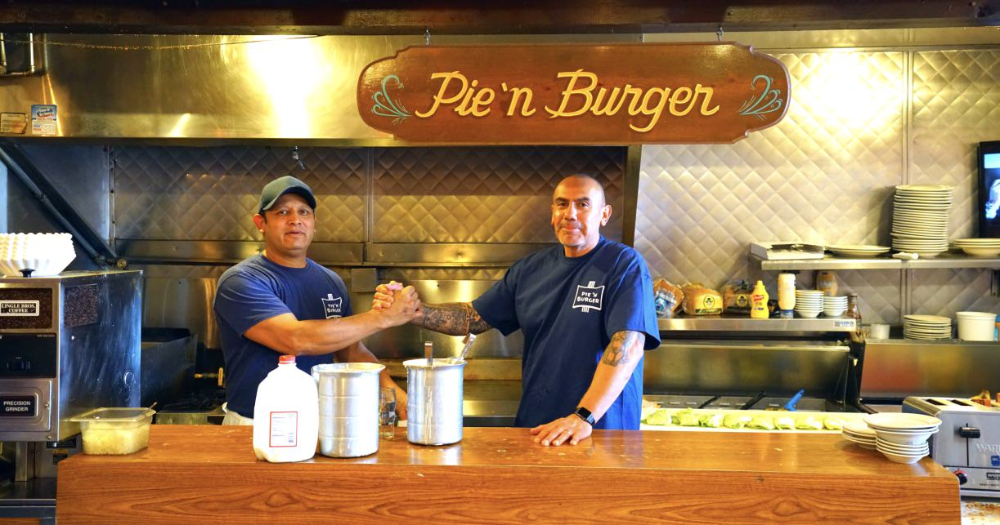

Anajak Thai
4:00 - 9:00 PM
$$
This family-run Thai restaurant in Sherman Oaks has a superpower: shape-shifting. Tuesdays are for Thai-inspired tacos and tostadas, which make sense the second you taste them, or for cheffy, one-off collaborations, while the last weekend of each month means its time for Justin Pichetrungsis freestyle tasting menu. But what some might consider the ordinary days in between are a joy, too, with dishes like the mouthwatering fish custard haw mok or Southern Thai fried chicken. Thats when the restaurant plays the part of neighborhood gem and you can see all the loving updates that Mr. Pichetrungsi made after he took over from his parents and bulked up the wine program.

Tulsi Indian Eatery
11:00 AM - 9PM
$$
On the surface, Tulsi is a nondescript fast-casual Indian spot, devoid of the large crowds or fanciful flair (and prices) of a more upscale place. But a closer look will reveal a menu with more range and better execution than most places can claim to have. That’s the beauty of Tulsi, where most dishes are under $10 and the menu’s worth a thousand words. The menu — which represents Southern, Northern, and Western India and has arguably the best Gujarati food in the San Fernando Valley, if not all of Los Angeles, has to offer — speaks volumes if you know how to listen. The team works with chefs actually from those areas in India to ensure that the dishes taste like distinct and accurate representations of the areas they originate from. Try the undhiyu, a 10-vegetable medley with sweet potatoes, potatoes, eggplant, yam, coconut, and more. It’s a Gujarati staple that is at once bitter, sweet, salty, and savory, and it’s not easily found in LA.

Colette
10:30 AM - 9 PM
$$$
Peter Lai, the acclaimed chef at Embassy Kitchen in San Gabriel, took over the stoves at Colette in Pasadena in November 2022 and serves some of the most innovative and intricate Cantonese-influenced cooking in Los Angeles. Though the restaurant’s decor hasn’t changed much since the kitchen switch, the menu is all-new and something worth gathering around the lazy susan for. Many of the restaurant’s signature dishes including the stir-fried lobster sticky rice and crispy-stuffed chicken require advance notice, so call to reserve ahead to avoid any disappointment at the table. Menu standbys like the classic beef chow fun, cola-glazed chicken wings, and all-day dim sum are just as enticing.

Sushi Note
5:30 - 10:00 PM
$$$
Since 2018, Sherman Oaks, Sushi Note has operated along Ventura Boulevard, a street synonymous with sushi in the San Fernando Valley. Sushi Note remains one of LA’s standouts with outstanding wines, classic jazz emanating from old-school repurposed speakers, and sushi prepared by chef Kiminobu Saito. Not only does Saito personally select the seafood, he’s also a devoted jazz fan. (Co-owner David Gibbs also has an obsession with hi-fi equipment.) Watching Saito work is akin to witnessing a jazz musician at their best. Ingredients can vary from week to week, but the chef’s decades of skill, precision, and improvisation are on display with hamachi yellowtail seasoned with garlic, serrano, and ponzu. Make room for the impossibly thin scallop carpaccio with olive oil, lemon, and truffle salt. The black cod rivals competitors, but gives one to Sushi Note for uniqueness in the form of Saito’s sauteed lotus root or the miso mushroom soup while serenaded by Miles Davis in a mid-century designed room.

Bar Chelou
5:30 - 9:30 PM
$$$
Though many often mistake Bar Chelou’s menu for French, chef Doug Rankin clearly loves Spanish, Californian, and Asian flavors. By utilizing the region’s produce in this endeavor, this Pasadena restaurant is one of this year’s sleeper hits. The menu includes plenty of dishes to show off Rankin’s skill with vegetables alongside bone-in pork chops or a dry-aged bone-in ribeye. One wouldn’t expect the carrots râpées with coconut dressing, a hint of lime, peanuts, and thin fried potatoes on top of shredded carrots to be a showstopper, but it is. The rich and salty clam toast is decadently messy, but the confident execution with the trout makes it a must-order. There’s barely a bone in sight, with an herby pil pil sauce laced over a bed of rice. If a table isn’t available, the bar is an ideal place to take in the room and watch diners obsess over dishes expedited to their table. After one visit, one will easily understand why LA diners followed Rankin from his former Bar Restaurant and right into Bar Chelou.

Pie ’n Burger
8:00 AM - 9:00 PM
$$
It’s hard to argue with the classicists who say that Pie ’n Burger is the most representative Los Angeles burger. This 1963-era standard is still hitting all the right notes, marrying Thousand Island dressing, pickles, tomato, and a touch too much lettuce to create something so inherently LA it cannot be missed. Pasadena is said to be the home of the cheeseburger, and Pie ’n Burger is its timeless crowning achievement, located within walking distance of CalTech and still carrying its local feel and diner vibes. And yes, the pie is great, too.